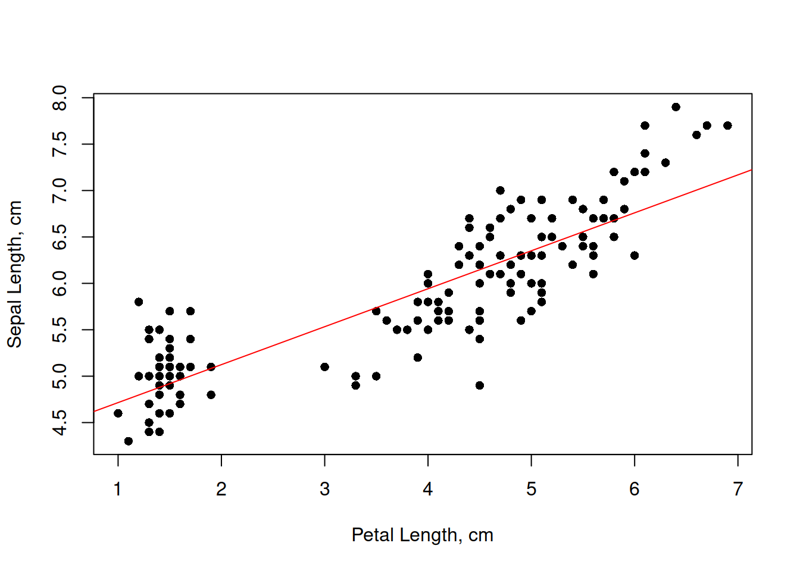
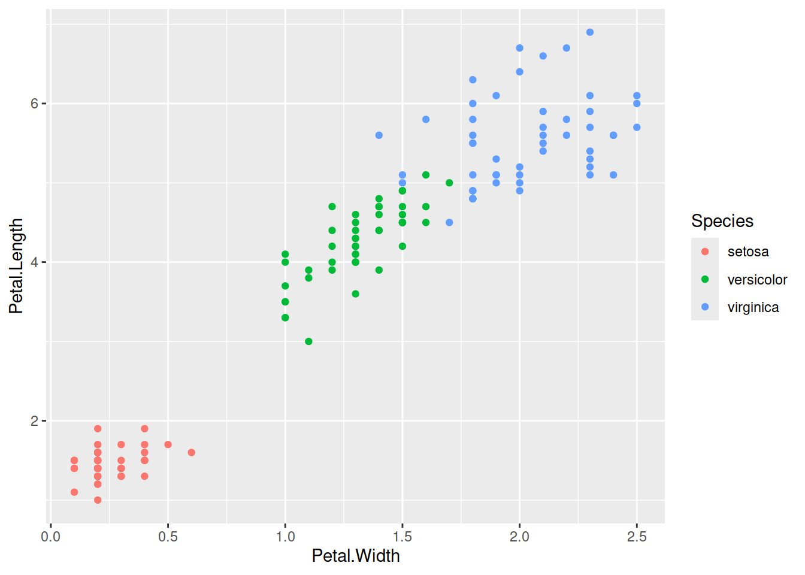
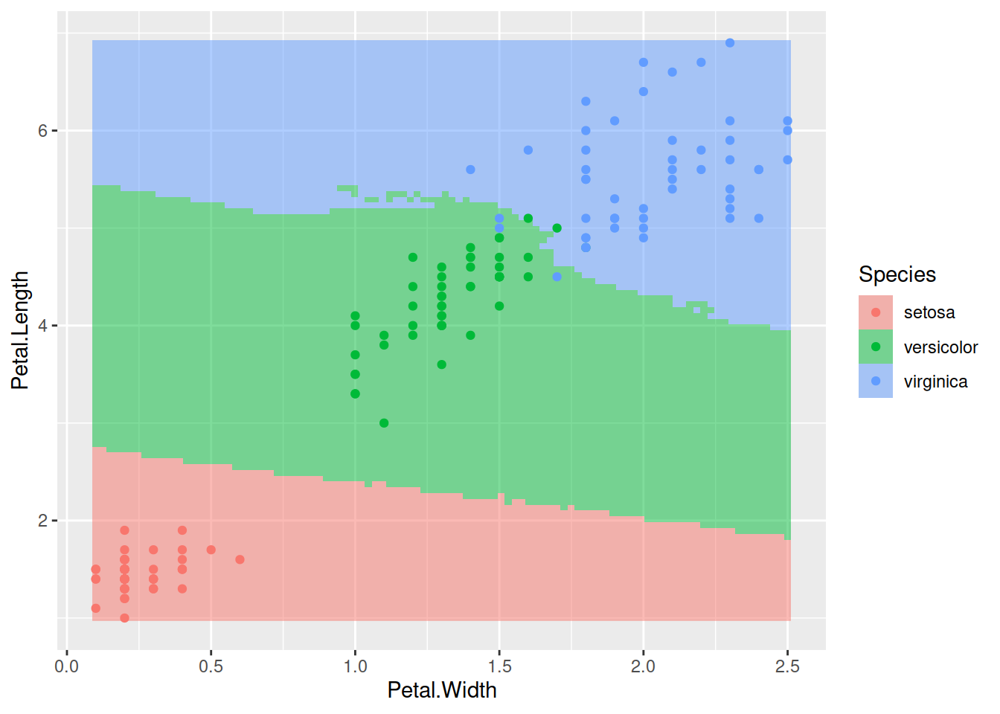

3.6 Експеримент і модель
За визначенням, модель є спрощеним, узагальненим, концептуальним уявленням про явище реального світу. Моделі ніколи не відображають реальність всеохоплююче, адже природні процеси часто є занадто складними системами аби їх вичерпно описати. Моделі часто також мають певні межі, поза якими адекватне узагальнення не є адекватним. Втім, так чи інакше, моделювання є доволі потужним інструментом тестування гіпотез, без якого екологія не може існувати. Навіть якщо на систему впливають сотні різних чинників, комбінований вплив яких є дуже складним і неочікуваним, моделі із лише декількома змінними часто є достатніми для бодай якого та й висновку.
Для побудування моделі необхідні вхідні емпіричні дані, які в ідеальних умовах мають походити із експерименту – контрольоване маніпулювання окремого чинника із супутнім спостереженням за поведінкою системи. В екології угруповань та екосистем проведення контрольованого експерименту не завжди є можливими, адже досліджувані системи є дуже великими, однак це не означає що неможливо зібрати дані. Спостереження також може генерувати корисні дані для моделювання. Процедуру збору даних для побудування моделі називають експериментальним дизайном. Адекватний статистичний аналіз неможливий без адекватного експериментального дизайну, якими би потужними чи модними не були статистичні методи.
Уявіть гіпотезу, що частота співання серед самців зяблика залежить від інтенсивності освітлення навколишнього середовища. Для перевірки цієї гіпотези можна розробити дизайн експерименту. Наприклад, в декількох точках розвісити автоматичні звукові рекордери і датчики освітлення. Яких помилок можна припуститись в цьому дизайні? Можна розвісити датчики настільки близько один до одного, що декілька датчиків будуть одночасно записувати одних і тих же особин: в такому випадку спостереження не будуть незалежними, що суперечитиме припущенням більшості статистичних тестів. Можна розвісити датчики освітлення занадто далеко від рекордерів: тоді спостереження не будуть між собою пов’язані, і всякі результати не матимуть жодного сенсу. Можна повісити датчики в екотопі чи континенті, де зяблики не трапляються… Гаразд, скажімо, експериментальний дизайн адекватний, дані зібрано, і знайдено взаємозв’язок між інтенсивністю освітлення й частотою співання. Знайдений зв’язок являє собою модель. Які її межі? Наприклад, така модель може передбачити, що в умовах нульового освітлення (в печері) варто очікувати негативної частоти співання, а за дуже інтенсивного освітлення, як-то прямо під прожектором, самець буде співати і не затикатись. Обидва передбаченнями є неадекватними. Крім того, чи експеримент врахував всі можливі фактори? Адже поведінка птахів може бути пов’язаною не тільки із освітленням, а й з температурою, наявністю корму, гніздових територій, інших самців, самок тощо, і навіть коли всі ці фактори враховано, то у одного конкретного зяблика може просто не бути настрою співати. Відтак, наша модель не є вичерпною, і питання лише в тому, чи є статистично значуща роль тільки інтенсивності освітлення – а багатьма іншими факторами іноді варто просто знехтувати.
3.6.1 Експериментальний дизайн та псевдореплікація
Уявіть, що ви намагаєтесь дослідити вплив якоїсь хімічної сполуки в ґрунті на процеси росту рослин. Ви відбираєте сотню особин рослин однакового віку та фізіологічного стану із однієї генетичної лінії, висаджуєте кожну рослину в окремий вазон, і виставляєте їх в дві теплиці по п’ятдесят вазонів на теплицю. В одній теплиці ви додаєте однакову кількість хімічної сполуки до кожного вазону, в іншому – ні. За декілька тижнів настає час зібрати результати, і ви обережно вимірюєте морфологічні параметри кожної рослини: ріст, кількість листків, сумарну площу листків, концентрацію хлорофілу, суху біомасу. Прийшов час проводити статистичну обробку даних, ви дбайливо перевірили розподіли кожної змінної, і еврика! Тест Стьюдента показує значущу відмінність між двома групами за всіма параметрами. Виявляється, додавання цієї хімічної сполуки пов’язане із активнішим ростом рослин. Час подавати заявку на патент?
Не так швидко. Який був розмір вашої вибірки? Сотня особин, тож \(n = 100\)? Чи, оскільки і кожній групі було по п’ятдесят особин, то \(n = 50\)? Насправді, \(n = 2\). Можливо, теплиця із кращим ростом рослин стояла в місці із кращою експозицією до сонячних променів, або під нею зарита труба із теплою водою, або її нещодавно відремонтували і там краща термоізоляція, або вона ближче до виходу й аспіранти постійно ходили в неї на перекур. Можливостей є настільки безліч, що всі їх контролювати із таким експериментальним дизайном неможливо. Жахіття змішувальних змінних (confounding variable, таких змінних що впливають і на незалежну, і на залежну змінну, й відтак спричиняють коваріацію між ними без жодного причинно-наслідкового зв’язку) й помилок експериментального дизайну треба завжди мати на увазі. Цей же експеримент став жертвою невдалого дизайну із псевдореплікацією і лише довів ефект теплиці на ріст рослин.
Поняття псевдореплікації (pseudoreplication) ввів Харлберт 1984 року і визначив його як “використання статистичного умовиводу для тестування експериментального ефекту на даних із експериментів де ефект не є реплікованим (хоча вибірки можуть бути реплікованими) або репліканти не є статистично незалежними”. В цьому формулюванні, під “експериментальним ефектом” (treatment) мається на увазі будь-яке спеціальне відношення до зразків, яке є під питанням в експерименті (наприклад, додавання хімікатів), і яке розділяє вибірку на “експеримент” і “контроль”. Вибірки в експериментальній чи/та контрольній групах можуть бути реплікованими (тобто мати більше за один зразок), але репліканти – підмножини вибірки, в яких всі елементи отримують однаковий експериментальний ефект – не обов’язково відповідають цим групам. У прикладі вище реплікантами є не окремі зразки в експериментальній/контрольній групах, а теплиці, адже в межах теплиці експериментальний ефект однаковий. На противагу, якби всі зразки були в одній теплиці, тоді ефект теплиці можна було б елімінувати і кожен окремий вазон майже можна було б вважати реплікантом (майже, адже зразки з однієї теплиці все ще не є статистично незалежними). Ще краще, якщо цього дозволяють ресурси, було б мати множину теплиць в яких випадковим чином розподілені зразки із експериментальної та контрольної груп. В такому випадку ефект теплиць можна було б врахувати в статистичному аналізі, наприклад, за рахунок змішаних моделей (mixed-effect model) із рандомним ефектом теплиці.
Визначення Харлберта робить акцент на статистичній незалежності, якої часто дуже складно досягнути. В ідеальному випадку псевдореплікації можна уникнути коли нема підстав вважати, що одні й ті ж чинники впливають на різні зразки. В екології особливу увагу варто приділяти просторовій та часовій незалежності. Якщо дані зібрані із різних просторових точок, можна виправдано очікувати що близькі між собою точки будуть менш незалежними одна від одної порівняно із далекими точками (наприклад, вимірювання вмісту газів в межах міста не будуть незалежними, бо всі зразки є під впливом одного мікроклімату). В таких випадках варто зважати на просторову автокореляцію (spatial autocorrelation) – залежність точок даних від їх взаємного розміщення в просторі – і використовувати специфічні методи аналізу що враховують цю автокореляцію35. Подібно, вимірювання змінних в часі також не є незалежними, адже значення змінної в момент часу залежить від значень цієї змінної в інші моменти часу (наприклад, середня добова температура сьогодні залежить від температури вчора – набагато ймовірніше що між цими значеннями незначна різниця, адже різкі перепади температури є відносно рідкісним явищем). Будь-які змінні в часі варто аналізувати за допомогою методів часових серій (time series). Варто зважати, що будь-який натяк на відсутність статистичної незалежності у вибірці зводить нанівець використання більшості класичних статистичних тестів, а відтак їх результати не є достовірними.
3.6.2 Дані та проблема моделювання
У житті кожного польовика наступає такий момент, коли стадія планування дослідження (= розробки експериментального дизайну) із усіма врахованими застереженнями щодо псевдореплікації та незалежності спостережень давно позаду, труднощі польових досліджень подолані, все, що могло піти не так, пішло не так і ці помилки виправлені, і можна гордо сказати що збір даних закінчено. В цей момент ейфорія доконаності перспективи прокидатись о 5 ранку і лізти в, як воно завжди буває, найнеочікуваніші місця по об’єкт досліджень швидко заміщується жахом від усвідомлення того, що тепер всі зібрані дані пора би аналізувати. Статистичних тестів існує безліч, і до одного набору даних можна застосувати багато різних методів, більшість із яких видадуть якийсь результат. Тож який підхід обрати? Цей підрозділ не дасть відповіді на це питання, однак може підштовхнути до перших кроків.
Однією ремаркою буде формат даних. Часто на момент оцифровування польових нотаток з’являється спокуса зробити нудну таблицю більш візуально привабливою (наприклад, додати заголовок, виділити клітинки обабіч для нотаток, додати відсотки чи одиниці вимірювання коло значень, вписати декілька значень в одну клітинку тощо). Такий підхід, звісно, дещо спрощує і без того нудний процес оцифровування, однак стає помітною проблемою коли настає час ці дані аналізувати. Справа в тім, що аналіз оперуватиме змінними (variables) – послідовностями значень певного параметру, кожне з яких відповідає окремому спостереженню. Відтак, колонки в таблицях із даними повинні відповідати різним змінним, рядки – окремим спостереженням або вимірюванням, а в одній клітинці має бути лише одне значення. Такий підхід дехто називає “охайними даними” (tidy data, Wickham & Grolemund (2017)), адже він дозволяє зберігати дані в такому вигляді, що їх одразу можна аналізувати (Рис. 3.14). Завжди варто мати на увазі, що колись ці дані доведеться зберегти у форматі *.csv, який являє собою лишень текст, де рядки таблиці записані рядками тексту, а значення клітинок розділені комами. Відтак, наприклад, варто уникати використання коми в клітинках (що ніколи не знадобиться якщо в клітинці тільки одне значення), а в якості десяткового розділювача використовувати крапку (“одна десята” має бути “0.1”, а не “0,1” – програма на кшталт R просто не зрозуміє що то за кома).
![Уявімо дослідження ефекту структури лісу на населення птахів. Приклад **(А)** відображає дещо невдалий формат даних: шапка документу займає декілька рядків (їх все одно доведеться видалити для подальшої обробки даних, тож пояснення для значень змінних варто тримати в окремому файлі, наприклад, в документації до набору даних), дата й час не однаковому форматі (їх можна вносити як текст аби уникнути автоматичного форматування, а на етапі роботи з даними можна використати функції бібліотеки `lubridate` для R), температура й хмарність є двома різними змінними із різними одиницями вимірювання (додавання одиниць вимірювання в клітинки перетворить їх вміст в текст, а додавання коми в клітинках стане на заваді адекватного зчитування даних у форматі *.csv), колонка дерев має нефіксовану кількість значень в кожній клітинці. Натомість, ті ж дані можна оцифрувати в межах парадигми охайних даних **(В)**, при чому декількома способами. Зображений тут спосіб не викличе необхідності перемикати налаштування мови під час аналізу даних, адже назви колонок прописані англійською мовою, а масив даних легко може бути імпортованим в R.](images/tidydata.png)
Рис. 3.14: Уявімо дослідження ефекту структури лісу на населення птахів. Приклад (А) відображає дещо невдалий формат даних: шапка документу займає декілька рядків (їх все одно доведеться видалити для подальшої обробки даних, тож пояснення для значень змінних варто тримати в окремому файлі, наприклад, в документації до набору даних), дата й час не однаковому форматі (їх можна вносити як текст аби уникнути автоматичного форматування, а на етапі роботи з даними можна використати функції бібліотеки lubridate для R), температура й хмарність є двома різними змінними із різними одиницями вимірювання (додавання одиниць вимірювання в клітинки перетворить їх вміст в текст, а додавання коми в клітинках стане на заваді адекватного зчитування даних у форматі *.csv), колонка дерев має нефіксовану кількість значень в кожній клітинці. Натомість, ті ж дані можна оцифрувати в межах парадигми охайних даних (В), при чому декількома способами. Зображений тут спосіб не викличе необхідності перемикати налаштування мови під час аналізу даних, адже назви колонок прописані англійською мовою, а масив даних легко може бути імпортованим в R.
Коли говорити про змінні, то дані можуть мати один із багатьох можливих форматів. Одна змінна може мати лише один формат даних, і, скоріш за все, це буде один із наступних:
логічні дані (Boolean), які приймають одне із двох можливих значень (1/0, правда/неправда, True/False);
числові дані (numerical), що можуть включати як континуальні значення (double/float, наприклад, вага, зріст тощо), так і дискретні числа (integer, наприклад, кількість особин);
текст (character), будь-який набір символів який має принаймні один символ, що не є числом (власне, чому не варто додавати одиниці вимірювання до значень, які за своєю природою є числом);
категорійні дані (factor), в яких одне спостереження може приймати одне значення із певного скінченного набору можливих значень (наприклад, вид, стадія життєвого циклу тощо);
дата/час (date/time) є особливим форматом даних із яким треба бути дуже обережним, адже форматування іноді може дивно поводитись (наприклад, автоматично переводитись в дискретну кількість секунд із якогось моменту типу 1970-01-01 00:00:00), а неповні дані бувають неочевидними (наприклад, якщо надано тільки місяць і день, то не завжди вдається вгадати рік); найповнішим форматом є “YYYY-MM-DDThh:mm:ss+hh:mm”, наприклад, “2024-10-15T22:43:25-04:00” каже “рік 2024, місяць 10, день 15, година 22, хвилина 43, секунда 25, часовий пояс мінус 4 години від стандартного часу UTC”. Часовий пояс варто наводити, адже в багатьох локаціях наявна змінна літнього і зимового часу; альтернативно, можна наводити час за всесвітнім координованим часом (UTC, позначається як “Z” від Zulu), як-то для попереднього прикладу “2024-10-16T02:43:25Z”.
Тепер нарешті погляньмо на структуру статистичної моделі. Вся суть моделювання полягає в тому, що дослідник намагається змоделювати певну залежну змінну (dependent variable) як функцію однією або декількох незалежних змінних, або предикторів (predictor). Для зручності модель можна записати формулою, яка в найпростішій ситуації виглядатиме як
\[y \sim f(x) \Longleftrightarrow y_i = f(x_i) + \epsilon_i\]
де ми намагаємось змоделювати кожне спостереження залежної змінної \(y\) як функцію змінної \(x\) із врахуванням якоїсь статистичної похибки \(\epsilon\).
Відповідно, проблема аналізу даних може становити або проблему регресії (regression) якщо залежна змінна має логічні або числові дані, або проблему класифікації (classification) якщо залежна змінна є категорійною.
3.6.2.1 Регресія
Регресія в найпростішому вигляді відповідає побудуванню прямої лінії в двовимірних координатах (Рис. 3.2). Таку лінію можна уявити як залежну змінну \(y\) у вигляді функції предиктора \(x\):
\[y \sim x \Longleftrightarrow y_i = \beta_0 + \beta_1 \cdot x_i + \epsilon_i\]
і в такому разі оцінка коефіцієнтів регресії \(\beta_0\) (інтерцепт, intercept) та \(\beta_1\) (нахил, slope) надасть уявлення про залежність між змінними: якщо \(\beta_1 > 0\), то \(y\) збільшується зі збільшенням \(x\), якщо \(\beta_1 < 0\) – то існує негативний взаємозв’язок, а статистичне тестування можна зав’язати на нульовій гіпотезі що \(\beta_1 = 0\).
Корисною особливістю лінійної регресії є те, що її можна використати і для моделювання нелінійних залежностей. Наприклад, якщо ми введемо нову змінну \(u\), яка є нелінійною функцією \(x\), скажімо, \(u = x^2\), то нічого не заважає побудувати лінійну регресію
\[y \sim u \Longleftrightarrow y_i = \beta_0 + \beta_1 \cdot u_i + \epsilon_i\]
хоча варто мати на увазі, що поліноміальні (polynomial) функції є складнішими, тож, наприклад, моделювання поліноміального зв’язку третього порядку матиме вигляд
\[y \sim \text{poly}(x, 3) \Longleftrightarrow y_i = \beta_0 + \beta_1 \cdot x_i + \beta_2 \cdot x_i^2 + \beta_3 \cdot x_i^3 + \epsilon_i\]
Крім того, можливо також не обмежувати себе одним предиктором і моделювати залежну змінну за допомогою декількох предикторів. Така регресія зветься множинною (multiple regression) і дозволяє оцінити ефект (=коефіцієнт) для кожного предиктора окремо якщо між предикикторами немає взаємної кореляції (multicollinearity):
\[y \sim a + b + c \Longleftrightarrow y_i = \beta_0 + \beta_1 \cdot a_i + \beta_2 \cdot b_i + \beta_3 \cdot c_i + \epsilon_i\]
Іншими двома важливими припущеннями базових методів регресії є те, що в моделі відсутня гетероскедастичність (heteroscedasticity) – варіація залежної змінної повинна бути незалежною від предикторів, – і те, що розподіл помилки \(\epsilon\) є нормальним. Простіші регресійні підходи застосовують метод максимальної правдоподібності для оцінки таких значень коефіцієнтів регресії, за яких сума квадратів помилок \(\epsilon_i\) є мінімальною, і відтак метод іноді називають простою регресією найменших квадратів (ordinary least squares regression, OLS regression). Іноді залежна змінна є не континуальною, а, скажімо, логічною (тобто 0/1) або має один із дискретних розподілів (наприклад, Пуасона). В таких випадках в нагоді стають узагальнені лінійні моделі (generalized linear models, GLM). Існують також методи, які дозволяють будувати криві, які локально підбудовують себе під точки спостережень, однак не мають чітко визначених параметрів і використовуються переважно для візуалізації: узагальнені додатні моделі (generalized additive models, GAM) та локально зважені поліноміальні моделі (locally estimated scatterplot smoothing, local regression, LOESS).
Якщо ж предиктором є не континуальна змінна, а категорійний фактор, така модель являтиме приклад дисперсійного аналізу, або аналіз варіації (analysis of variance, ANOVA). ANOVA розділяє залежну змінну на групи, що відповідають різним рівням фактора предиктора, і перевірка статистичної гіпотези зводиться до того, чи варіація між групами є більшою за варіацію в межах груп. Якщо так, то це лише каже що принаймні одна група має значуще відмінні значення залежної змінної від інших груп, однак не каже яка саме – для цього часто застосовують post hoc тест Тюкі (Tukey Honestly Significant Difference test, Tukey HSD). Варто пам’ятати, що технічно ANOVA є окремим випадком OLS-регресії, адже тестування гіпотез в регресії використовує то й же механізм, що аналіз варіації (тест Фішера), а фактор можна зобразити у вигляді декількох бінарних колонок, які відповідають рівням фактору (див. коментар щодо типів кодування аналізу варіації).
Аби проілюструвати регресію в R, корисним набором даних може бути iris із стандартних супутній даних в пакеті datasets. В цьому наборі даних наведено проміри в см чотирьох морфологічних ознак квіток: довжина (*.Length) та ширина (*.Width) чашолистків (Sepal.*) та пелюсток (Petal.*), виміряні в 50 особин кожного з трьох видів півників (Iris setosa, I. versicolor, та I. virginica). Відтак, дані мають 150 рядків та 5 колонок:
## Sepal.Length Sepal.Width Petal.Length Petal.Width Species
## 1 5.1 3.5 1.4 0.2 setosa
## 2 4.9 3.0 1.4 0.2 setosa
## 3 4.7 3.2 1.3 0.2 setosa
## 4 4.6 3.1 1.5 0.2 setosa
## 5 5.0 3.6 1.4 0.2 setosa
## 6 5.4 3.9 1.7 0.4 setosa## [1] 150 5Побудуймо просту лінійну регресію, в якій Sepal.Length є функцією від Petal.Length:
# запишемо регресію в об'єкт
fit_iris1 <- lm(Sepal.Length ~ Petal.Length, data = iris)
# поглягньмо на коефіцієнти регресії
summary(fit_iris1)##
## Call:
## lm(formula = Sepal.Length ~ Petal.Length, data = iris)
##
## Residuals:
## Min 1Q Median 3Q Max
## -1.24675 -0.29657 -0.01515 0.27676 1.00269
##
## Coefficients:
## Estimate Std. Error t value Pr(>|t|)
## (Intercept) 4.30660 0.07839 54.94 <2e-16 ***
## Petal.Length 0.40892 0.01889 21.65 <2e-16 ***
## ---
## Signif. codes: 0 '***' 0.001 '**' 0.01 '*' 0.05 '.' 0.1 ' ' 1
##
## Residual standard error: 0.4071 on 148 degrees of freedom
## Multiple R-squared: 0.76, Adjusted R-squared: 0.7583
## F-statistic: 468.6 on 1 and 148 DF, p-value: < 2.2e-16Виглядає, що регресію можна описати лінією \(y = 4.307 + 0.409 \cdot x\). Перевірмо, наскільки добре це описує дані:
# намалюймо точки даних
plot(iris$Petal.Length, iris$Sepal.Length,
xlab = "Petal Length, cm", ylab = "Sepal Length, cm",
pch = 16)
# промалюймо лінію регресії
abline(a = 4.3066, b = 0.40892, col = "red")
Подібним чином можна побудувати й множинну регресію (напр., lm(Sepal.Length ~ Petal.Length + Petal.Width, data = iris)), й усіляко досліджувати лінійні та криволінійні взаємозалежності. Завжди варто мати на увазі, втім, що наявність статистично значущих зв’язків не передбачає причинно-наслідкових зв’язків. Наприклад, чи можна справді вважати що довжина пелюсток визначає довжину чашолистків? Натомість, мабуть, біологічно обґрунтованим стало би припущення, що на обидві ці морфологічні ознаки впливають одні й ті ж довкіллєві чи генетичні фактори36.
3.6.2.2 Класифікація
Що ж робити, якщо залежна змінна в моделі є не континуальною, а фактором? Наприклад, чи можна за комбінацією морфологічних промірів квітки передбачити вид півників? Таке завдання відповідатиме проблемі класифікації.
Класифікаційна модель отримує на вхід набір дескрипторів репліканта (рядку даних), і на підставі цих даних намагається оцінити ймовірності того, що об’єкт належить до певного класу, наприклад, для трьох видів півників,
\[ \begin{cases} P(y_i \in \text{setosa}) = f(x_i) \\ P(y_i \in \text{versicolor}) = f(x_i) \\ P(y_i \in \text{virginica}) = f(x_i) \end{cases} \]
При чому варто очікувати, що \(P(y_i \in \text{setosa}) + P(y_i \in \text{versicolor}) + P(y_i \in \text{virginica}) = 1\).
Існує чимало алгоритмів класифікації, і не всі з них напряму обчислюють ймовірності, але ідея подібна: для кожного рядку даних алгоритм намагається вгадати клас спостереження. Спробуймо використати один із найбільш класичних алгоритмів, k-найближчих сусідів (k-nearest neighbors, KNN), для класифікації півників. Механізм алгоритму дуже простий: для кожного нового спостереження, KNN дивиться на найближчі \(k\) спостережень і визначає клас нового спостереження як найбільш поширений серед цих \(k\) спостережень. Наприклад, якщо \(k=3\), і ми намагаємось вгадати клас для спостереження, найближчі сусіди якого є двома setosa і одним virginica, то нове спостереження визначимо як setosa.
KNN є прикладом алгоритму машинного навчання із учителем (supervised machine learning). Такі алгоритми вимагають вхідного, навчального, набору даних із відомою класифікацією (тому й називаються supervised), і очікують нових точок даних для застосування щойно навченого класифікатора. Наприклад, для даних iris, де маємо 150 спостережень, найбільш доцільним питанням із використанням KNN було би “от ми маємо нове спостереження із промірами пелюсток та чашолистиків, але ми не знаємо виду – який це вид?” Тоді KNN пошукає найближчих сусідів і видасть результат.
Вибір значення \(k\) є наріжним каменем використання цього методу, адже невідомо скільки найближчих сусідів є забагато чи замало для ефективного алгоритму. Значення \(k=3\) і \(k=5\) є доволі поширеними, але довільними. Для виправданого вибору цього параметру, варто проводити валідацію класифікатора, про що поговоримо пізніше.
Іншим застосуванням класифікатора може бути поділ простору параметрів. Справа в тім, що один класифікатор, навчений на скінченній кількості спостережень, теоретично можна використати для класифікації незліченної кількості точок, а відтак і прокласифікувати цілий простір замість декількох точок. Наприклад, погляньмо на двовимірний простір промірів пелюсток півників.
# намалюймо точки даних
iris %>%
ggplot(aes(x = Petal.Width, y = Petal.Length, color = Species)) +
geom_point()
## Loading required package: lattice##
## Attaching package: 'caret'## The following object is masked from 'package:purrr':
##
## liftfit_iris2 <- caret::train(Species ~ Petal.Width + Petal.Length,
data = iris,
method = "knn",
tuneGrid = data.frame(k = 5))
# генерація точок в просторі параметру
xg <- seq(min(iris$Petal.Width), max(iris$Petal.Width), length.out = 100)
yg <- seq(min(iris$Petal.Length), max(iris$Petal.Length), length.out = 100)
xyg <- expand.grid(xg, yg)
colnames(xyg) <- c("Petal.Width", "Petal.Length")
# застосуємо і запишемо класифікацію нових точок
xyg$Species <- predict(fit_iris2, xyg)
# промалюємо простір
ggplot() +
geom_raster(data = xyg,
aes(x = Petal.Width, y = Petal.Length, fill = Species),
alpha = 0.5) +
geom_point(data = iris,
aes(x = Petal.Width, y = Petal.Length, color = Species))
Цікаво, що KNN можна застосувати і до проблеми регресії, якщо залежна змінна є континуальною. В такому випадку, класифікатор шукатиме середнє значення (або іншу статистику) для \(k\) найближчих сусідів.
Загалом же, існує чимало інших алгоритмів класифікації. Деякі із них кластеризують точки без вхідних даних щодо класів спостережень і є, відтак, алгоритмами машинного навчання без учителя (unsupervised machine learning) – наприклад, метод K-середніх (K-means), який ітеративно шукає найкращий поділ хмари точок на \(K\) кластерів. Тема машинного навчання є дуже популярною, й, відтак, нові алгоритми з’являються доволі часто.
автокореляція – це кореляція змінної із самою собою, тобто залежність значень у вибірці від інших значень в цій вибірці↩︎
Зручним уявним експериментом для прикладу абсурдності ототожнювання кореляцій (чи інших статистичних зв’язків) та каузацій є наступна ситуація: нескладно уявити, що кількість пожежників, залучених до гасіння пожеж, позитивно пов’язана зі збитками від пожежі – то чи значить це, що пожежники завдають збитків?↩︎